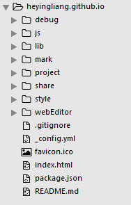
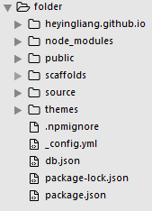
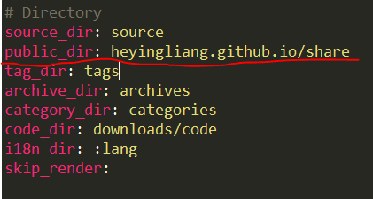

第一步：明确需求
首先，我是程序员一枚，搭建博客也就是记录一下自己的学习经历，心得体会，遇到的一些Bug，还有就是存放平时做的一些小项目。建立博客的目的不是纯粹地为了写文章，在选择搭建工具的时候纠结了很久，一开始是想要用wordpress的，这个工具一开始也是为了博客搭建而生，但现在“壮大”了，成为了一个内容管理系统（CMS）。
本着货比三家的心态，又对其他的一些像PHPCMS V9，帝国CMS等工具进行了简单的了解，一番精挑细选最终敲定，hexo！就是它了。
选择它的原因并不是想说它比其他工具优秀，我也不去评判哪个工具的好坏，只要符合自己的需求，自己用的爽就是最好的，我想要的就是一个帮助我搭建静态页的，自己可以在心情好的时候优化一下自己的博客页面，做做SEO，调整调整布局，说白了就是自己的技术实验室与档案室。
第二步：环境配置
第三步：搭建
其实官网上面整个搭建过程已经说的很清楚了，我还是记录一下我搭建的不同点，首先我已经把自己的首页做好了，网站结构也已经构思好了，文件夹是这样的：

我现在要的是把我写的文章放在我的share文件夹下
可以这样在配置：
1.首先，将项目移动到hexo init生成的文件夹下–我的是folder

2.打开_config.yml文件，将public_dir： public改成

public_dir 字段是配置解析后生成的静态文件的存放目录
问题总结
问题描述： 安装后运行hexo s没有报错，但是打开localhost:4000出现白屏，未能显示页面
问题分析： 其他应用程序占用4000端口
解决方案：
方法一：先按Ctrl+C结束当前服务，执行命令hexo s -p 4001，意思就是令其在4001端口运行， 页面打开localhost:4001正常显示方法二：打开_config.yml，新增以下代码
1 | #sever |
命令行运行指令hexo s页，面打开localhost:4001正常显示
何莹亮原创技术文章，转载请注明出处：https://heyingliang.github.io/share/2018/02/19/blogStart/